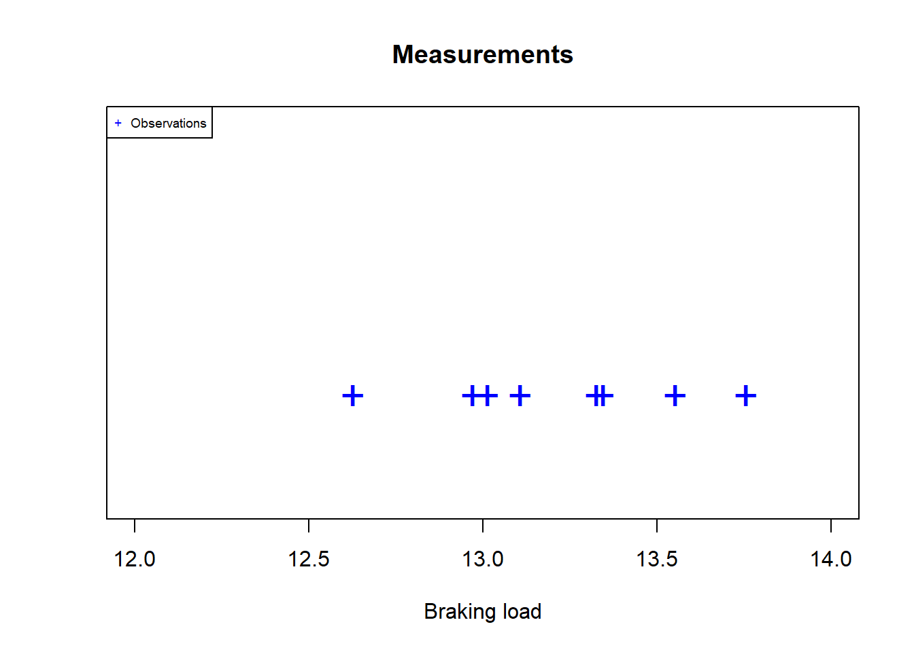
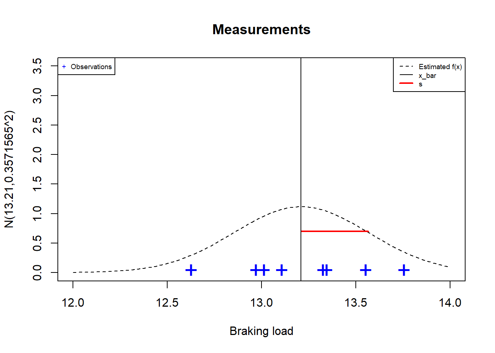
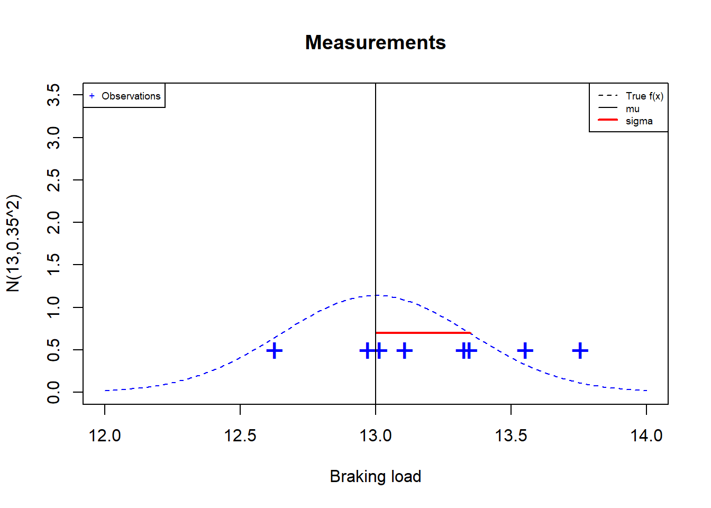
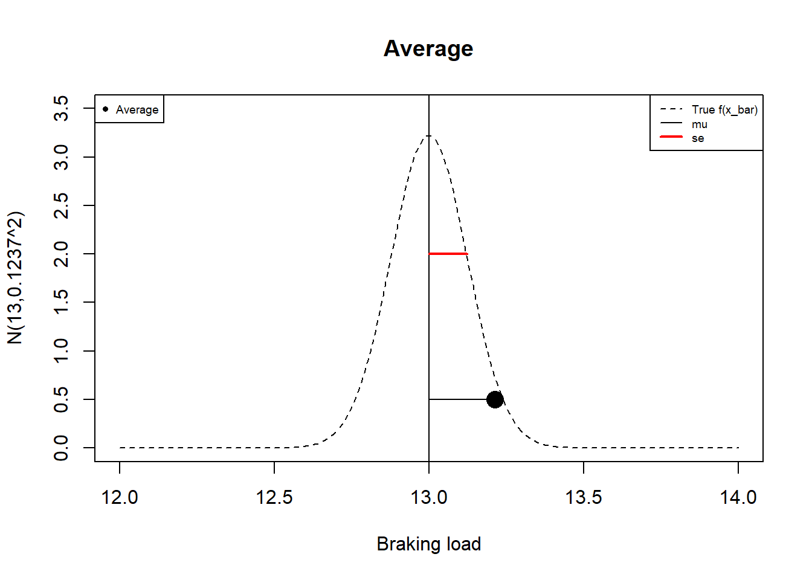

Chapter 10 Distribuciones de muestreo
10.2 Distribución normal
Cuando tenemos una variable aleatoria normal
\[X \rightarrow N(x; \mu, \sigma^2)\]
¿Cómo estimamos \(\mu\) y \(\sigma^2\)?
necesitamos tomar una muestra aleatoria
necesitamos estimar cada parámetro
10.3 Ejemplo: Cuando no conocemos los parametros
Imaginemos que un cliente que nos pide a nuestra empresa metalúrgica que le vendamos \(8\) cables que pueden cargar hasta \(96\) Toneladas; eso es \(12\) Toneladas cada uno.
- Tenemos en stock un conjunto de cables que podrían hacer el trabajo.
¿Podemos utilizar los cables en stock o necesitaríamos producir unos nuevos?
10.4 Ejemplo
Tomamos una muestra de \(8\) experimentos aleatorios, cada uno de los cuales consiste en cargar un cable hasta que se rompa y anotamos la carga de rotura.
Estos son los resultados: La observación de una muestra de tamaño \(8\)
## [1] 13.34642 13.32620 13.01459 13.10811 12.96999 13.55309 13.75557 12.62747Ninguno se rompió a \(12\) Toneladas.
Hubo uno que se rompió a \(12.62747\) Toneladas.
¿Nos arriesgamos y vendemos una muestra aleatoria \(8\) cables de nuestro inventario?

10.5 Muestra aleatoria
Una muestra aleatoria de tamaño \(n\) es la repetición de un experimento aleatorio \(n\) veces de forma independiente.
Una muestra aleatoria es una variable aleatoria de \(n\)-dimensional
\[(X_1, X_2, ... X_n)\]
donde \(X_i\) es la i-ésima repetición del experimento aleatorio con distribución común \(f(x; \theta)\) para cualquier \(i\)
Una observación de una muestra aleatoria es el conjunto de \(n\) valores obtenidos de los experimentos
\[(x_1, x_2, ... x_n)\] Nuestra observación de la muestra de \(8\) cables fue
## [1] 13.34642 13.32620 13.01459 13.10811 12.96999 13.55309 13.75557 12.6274710.6 Ejemplo
Nos gustaría calcular \(P(X \leq 12)\).
Vamos a suponer que el punto de rotura se distribuye normalmente.
\[X \rightarrow N(x; \mu, \sigma^2)\]
Para calcular \(P(X \leq 12)\) necesitamos los parámetros \(\mu\) y \(\sigma^2\).
¿Cómo estimamos los parámetros usando la muestra observada?
10.7 Promedio o media muestral
Definición
La media muestral (o promedio) de una muestra aleatoria de tamaño \(n\) se define como
\[\bar{X}=\frac{1}{n}\sum_{i=1}^n X_i\]
El promedio es una variable aleatoria que en nuestra muestra de \(8\) cables tomó el valor
\[\bar{x}_{stock}=13.21\]
10.8 Promedio como estimador
Este número puede usarse para estimar el parámetro desconocido \(\mu\) porque:
- \(E(\bar{X})=E(X)=\mu\)
- \(V(\bar{X})=\frac{V(X)}{n}=\frac{\sigma^2}{n}\)
(dado que cada experimento aleatorio en la muestra es independiente)
como
- \(n \rightarrow \infty\), \(V(\bar{X}) \rightarrow 0\)
entonces
- \(\bar{x}\) se concentra cada vez más cerca de \(\mu\) a medida que aumenta \(n\).
Podemos tomar un valor de \(\bar{x}\) como estimación para \(\mu\) o
\[\bar{x}=\hat{\mu}\]
10.9 Varianza muestral
Definición
La varianza de la muestra \(S^2\) de una muestra aleatoria de tamaño \(n\)
\[S^2= \frac{1}{n-1}\sum_{i=1}^n (X_i-\bar{X})^2\]
es la dispersión de las medidas al rededor de \(\bar{X}\). En nuestra muestra de \(8\) cables, \(S^2\) tomó el valor
\[s_{stock}^2=\frac{1}{n-1}\sum_{i=1}^n (x_i-\bar{x})^2=0.1275608\]
El valor esperado de \(S^2\) es
- \(E(S^2)=V(X)=\sigma^2\) (insesgado)
y por lo tanto \(S^2\) es
- un estimador de \(V(X)\)
- también se concentra alrededor de \(\sigma^2\) porque como \(n \rightarrow \infty\), \(V(\bar{S^2}) \rightarrow 0\) (consistente)
Podemos tomar un valor de \(s^2\) como estimación para \(\sigma^2\) o
\[s^2=\hat{\sigma}^2\]
10.10 Varianza muestral
\(S^2\) tiene como objetivo estimar la dispersión de los resultados al rededor de \(\mu\) (la varianza)
Si usamos \(\bar{X}\) como estimador de \(\mu\), debemos corregir su dispersión (es decir, el error cuadrático medio de \(\bar{X}\)).
La corrección se logra dividiendo por \(n-1\) y no por \(n\) en la definición de \(S^2\)
Para:
\(S_n^2=\frac{1}{n}\sum_{i=1}^n (X_i-\bar{X})^2\)
\(E(S_n^2) = \sigma^2-\frac{\sigma^2}{n} \neq \sigma^2\) (decimos que \(S_n^2\) es en estimador sesgado de )

10.11 Ajuste de un modelo
Ajustamos en un modelo cuando
- estimamos los parámetros del modelo
También decimos que entrenamos un modelo (aprendizaje automático)
Asumiendo que
\[X \rightarrow N(x; \mu, \sigma^2)\]
Como no conocemos los parámetros, sustituimos las estimaciones \(\bar{x}\) y \(s^2\) como los valores de \(\mu\) y \(\sigma^2\)
\[X \rightarrow N(x; \mu=13.21, \sigma^2=0.3571565^2)\]

10.12 Predicción
Predecimos el valor de un resultado cuando calculamos su probabilidad
¿Cuál es la probabilidad de que el cable se rompa a \(12\) Toneladas?
Si asumimos la variable aleatoria
\[X \rightarrow N(x; \mu, \sigma^2)\] Sustituimos las estimaciones \(\bar{x}\) y \(s^2\) en la distribución de probabilidad
\[P(X \leq 12)= F_{normal}(12; \mu=13.21, \sigma^2=0.1275608)\]
En R pnorm(12,13.21, 0.3571565)\(=0.000352188\)
Dada la muestra observada, existe una probabilidad estimada de \(0.03\%\) de que un solo cable se rompa a \(12\) Toneladas.
10.13 Inferencia
Cuando tenemos una variable aleatoria normal
\[X \rightarrow N(x; \mu, \sigma^2)\]
Y conocemos \(\mu\) y \(\sigma^2\).
Podemos hacer inferencias sobre \(\bar{X}\), es decir calcular probabilidades de la variable aleatoria \(\bar{X}\).
Cuando hacemos inferencias, generalmente hacemos la pregunta:
¿Qué tan seguros estamos de que el valor del estimador está cerca del parámetro verdadero?
10.14 Ejemplo: Cuando sí conocemos los parametros
Imaginemos que nuestros cables están certificados para romper con una carga media de \(\mu = 13\) Toneladas con varianza \(\sigma^2=0.35^2\).
Tomamos una muestra aleatoria de \(8\) cables
## [1] 13.34642 13.32620 13.01459 13.10811 12.96999 13.55309 13.75557 12.62747¿Podemos afirmar que en realidad producimos cables más resistentes porque obtuvimos \(\bar{x}=13,21\) en esta muestra de \(8\) cables?
Necesitamos calcular probabilidades de \(\bar{X}\).
- Cuál es la probabilidad de que la distancia entre \(\bar{X}\) y \(\mu\) sea menos de \(\bar{x}_{stock}-\mu=0.21\)?
\[P(- 0.21\leq \bar{X}-\mu \leq 0.21)\]
10.15 Desnidad para \(X\) y para \(\bar{X}\)
Cuando sabemos que los parámetros verdaderos son \(\mu=13\) y \(\sigma=0.35\) esto es lo que veríamos


10.16 Distribución media muestral
Teorema: Cuando \(X\) sigue una distribución normal \(X \rightarrow N(\mu, \sigma^2)\)
\(\bar{X}\) es normal:
\[\bar{X} \rightarrow N(\mu, \frac{\sigma^2}{n})\]
Entonces, si sabemos \(\mu\) y \(\sigma\) podemos calcular las probabilidades de \(\bar{X}\) usando la distribución normal.
La media y la varianza de \(\bar{X}\) son
- \(E(\bar{X})=\mu\)
- \(V(\bar{X})=\frac{\sigma^2}{n}\)
10.17 Inferencia del promedio
Ejemplo:
Si sabemos que la rotura de nuestros cables realmente se distribuye como \[X \rightarrow N(\mu=13, \sigma^2=0.35^2)\] entonces
\[\bar{X} \rightarrow N(13, \frac{0.35^2}{8})\]
- \(E(\bar{X})=13\)
- \(V(\bar{X})=\frac{0.35^2}{8}=0.01530169\)
Nuestro error observado en la estimación de la media es la diferencia
\[\bar{x}_{stock}-\mu=13.21-13=0.21\]
Nos preguntamos: ¿Es este un error típico?
10.18 Densidad para \(\bar{X}\)
Si supiéramos que los parámetros verdaderos son \(\mu=13\) y \(\sigma=0.35\) este es el error que veríamos

10.18.1 Probabilidades de \(\bar{X}\)
Si sabemos que la carga de rotura de nuestros cables realmente se distribuye como \[\bar{X} \rightarrow N(\mu=13, \frac{\sigma^2}{ n}=0.1237^2)\]
¿Cuál es la probabilidad de observar un error de estimación de \(\mu\) (distancia entre \(\bar{X}\) y \(\mu\)) menor a \(0.21\)?
Queremos calcular \[P(-0.21 \leq \bar{X} - 13\leq 0.21)=P(12.79 \leq \bar{X} \leq 13.21)\]
\(=F_{normal}(13,21; \mu, se^2)-F_{normal}(12,79; \mu, se^2)\)
En R podemos calcularlo como:
pnorm(13.21, 13, 0.1237)-pnorm(12.79, 13, 0.1237)=0.9104.
\(91,0\%\) de los errores son inferiores a \(0,21\), por lo que el error observado no parece demasiado típico (solo \(9\%\) de los errores son superiores).
Tal vez tengamos cables más fuertes de lo que pensábamos.
10.18.2 Suma muestral
Si estamos interesados en usar todos los \(8\) cables al mismo tiempo para transportar un total de \(96\) Toneladas, entonces deberíamos considerar sumar sus contribuciones individuales.
La suma de la muestra es la estadística:
\[Y=n \bar{X}=\sum_{i=1}^n X_i\]
Teorema: Si \(X \rightarrow N(\mu, \sigma^2)\) entonces \[Y \rightarrow N(n\mu, n\sigma^2)\]
Con media y varianza:
- \(E(Y)=n\mu\)
- \(V(Y)=n\sigma^2\)
10.18.3 Inferencia sobre la suma muestral
Si sabemos que nuestros cables \[X \rightarrow N(\mu=13, \sigma^2=0.35^2)\] entonces
\[Y \rightarrow N(n\mu=104, n\sigma^2=8\times 0.35^2)\]
- \(E(Y)=104\)
- \(V(Y)=8\times 0.35^2=0.98\)
Para nuestra muestra de \(8\) cables, observamos
- \(y_{stock}=105.7014\)
y, por tanto, el error observado en la estimación de la media de la verdadera carga de rotura total (\(n\mu\)) de \(8\) cables fue
- \(y_{stock}-n\mu= 1.7014\)
¿Es este un error típico?
10.18.4 Probabilidades de la suma muestral: Propagación del error
¿Cuál es la probabilidad de observar una diferencia \(Y-E(Y)\) menor que \(1.7014\)?
Queremos calcular la probabilidad
\[P(-1.7014 \leq \bar{Y} - 104 \leq 1.7014)=P(102.2986 \leq Y \leq 105.7014)\]
\(=F_{normal}(105.7014; n\mu, n\sigma^2)-F_{normal}(102.2986; n\mu, n\sigma^2)\)
En R podemos calcularlo como:
pnorm(105.7014, 104, sqrt(0.98)) - pnorm(102.2986, 104, sqrt(0.98))=0.914.
\(91,4\%\) de las veces tenemos sumas de cargas que son menores que \(1,7014\).
Esta proporción es mayor que la de cables individuales.
10.19 Inferencia en la varianza muestral
Consideremos un proceso de control de calidad que requiera que los cables se produzcan cerca del valor especificado \(\mu\).
Si una muestra de cables de \(8\) es muy dispersa (\(S^2>0.3\)), detenemos la producción: el proceso está fuera de control.
¿Cuál es la probabilidad de que la varianza muestral de una muestra de \(8\) cables sea mayor que los \(0,3\) requeridos?
10.20 Probabilidades de la varianza muestral
Teorema: Cuando \(X\) sigue una distribución normal \[X \rightarrow N(\mu, \sigma^2)\]
La estadística:
\[W=\frac{(n-1)S^2}{\sigma^2} \rightarrow \chi^2(n-1)\]
tiene una distribución \(\chi^2\) (chi-cuadrado) con \(df=n-1\) grados de libertad dada por
\[f(w)=C_n w^{\frac{n-3}{2}} e^{-\frac{w}{2}}\]
dónde:
\(C_n=\frac{1}{2^{(n-1)/2\sqrt{\pi(n-1)}}}\) asegura \(\int_{-\infty}^{\infty} f( t)dt=1\)
\(\Gamma(x)\) es el factorial de Euler para números reales
Si sabemos los valores verdaderos de \(\mu\) y \(\sigma\) podemos calcular las probabilidades de \(S^2\) usando la distribución \(\chi^2\) para \(W\).
10.22 \(\chi^2\)-estadística
Si sabemos que nuestros cables realmente se distribuyen como \[X \rightarrow N(\mu=13, \sigma^2=0.35^2)\]
entonces podemos calcular \[P(S^2 > 0.2)=P(\frac{(n-1)S^2}{\sigma^2} > \frac{(n-1)0.3}{\sigma^ 2})\] \(=P(W > \frac{(n-1)0.3}{\sigma^2})\)
\(=1-P(W \leq \frac{(n-1)0.3}{\sigma^2})=1-P(W\leq \frac{(8-1)0.3}{0.1225})\)
\(= 1- F_{\chi^2,df=7}(17.14286)=0.016\)
En R
1-pchisq(17.14286, df=7)=0.016
Solo hay una probabilidad de \(1\%\) de obtener un valor superior a \(s^2=0,3\).
\(s^2>0.3\) parece ser un buen criterio para detener la producción y revisar el proceso.
nuestro valor observado fue \(s^2_{stock}=0.1275608\)
la muestra no está demasiado dispersa y creemos que la producción está bajo control.